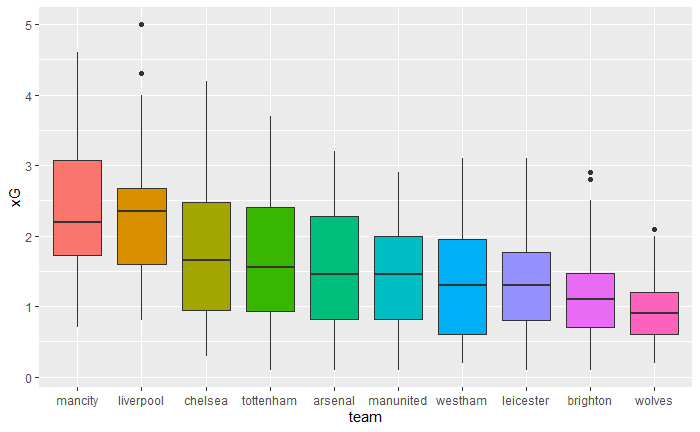

xG has changed the soccer analytics landscape, there is no question about it. It’s such a good metric. It’s easy to explain and it is widely available. It has allowed us to quantify offensive output and by doing so, it has advanced our understanding of all aspects of the game. It’s also so intuitive that it has gone mainstream. It’s now part of the conversation in regular soccer coverage.
The thing with it is the same thing that happens with stuff like \(R^2\) or \(p\)-values. It’s just a number. A summary statistic. But people sometimes forget about that and expect xG to tell the whole story. It’s true: xG paints a much better picture of a game than goals or shots on target. But it’s still not the whole picture. The context around which it is discussed matters.
# A tibble: 10 x 2
team xG
<fct> <dbl>
1 mancity 89
2 liverpool 89.1
3 chelsea 67.2
4 tottenham 65.1
5 arsenal 59.8
6 manunited 54.7
7 westham 49.9
8 leicester 51.3
9 brighton 46.1
10 wolves 35.9
Consider the table and the plot above. In the table, we have each of the top 10 teams in the English Premier League, season 2021-2022. For each team, I computed the total xG they generated throughout the season, using data from fbref. In the plot, we have the same teams, except for each one we have a boxplot of the xG’s they generated in each game of the season. In both cases, teams are ordered by their final position in the league.
It’s not like the table and the plot tell completely different stories. Generally speaking, a higher total xG was associated with a better position in the table. And the total xG of Manchester City and Liverpool were noticeably higher than that of the rest of the teams.
But the table can be just a little misleading. It seems to indicate that Liverpool had basically the same offensive output across the season. But the plot tells a more complicated story. We can infer from the boxplots that Manchester City’s distribution of xG is skewed to the right whereas Liverpool’s is skewed to the left. This means that the former achieved its total xG by creating a lot of it in a few games while having many games with lower tolls. On the other hand, the latter got it by creating high xG more consistently.
All of this to say: xG is great, but just quoting xG tables is lazy. It hides part of the story, especially when there is variance involved. Plots are usually a good alternative, but they also have their limitations. Soccer is complex, that’s part of the beauty, and it can not be reduced to a number.